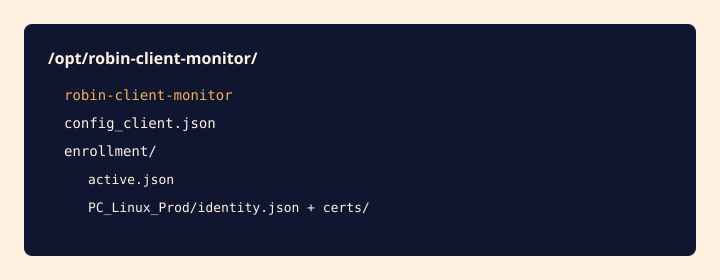

Ruvic Sentinel
{{ULTIMA_ACTUALIZACION}}
¿Qué es y para qué sirve?
Ruvic Sentinel es el agente por host del repo ws_client. En cada máquina corre como robin-client-monitor. El servidor de control de Ruvic le habla por WebSocket: envía herramientas bajo demanda y recibe resultados. La telemetría se guarda en la API de logs y un reporte la grafica.
No es el agente de código de Agent Canvas ni un conector OAuth tipo Gmail. Es un proceso instalado en Linux, Windows o macOS que se enrola una vez y queda como servicio.
Hay dos planos: control (wss://…/ws/colsoft-tools: handshake RSA, comandos firmados Ed25519) y datos (HTTPS OTLP /v1/logs). Las series de CPU/RAM no van por el WebSocket.
Prerrequisitos
- Binario robin-client-monitor (Linux/macOS) o robin-client-monitor.exe (Windows), más config_client.json sin llaves.
- Permiso de administrador en el host y red hasta la URL pública HTTPS del control.
- JWT del dueño del agente para generar un token de enrollment enr_… (un solo uso), o una carpeta enrollment/ ya provisionada.
- En macOS el agente se enrola y conecta; las tools nativas de Windows/Linux responden UNSUPPORTED.
Configuración en el fabricante
El “fabricante” es el propio host. Instala el binario en una ruta estable, no en Descargas.

- Copiar archivos: Linux/macOS: /opt/robin-client-monitor. Windows: C:\Program Files\robin-client-monitor. Incluye el ejecutable y config_client.json.
- Enrolar una vez: Contra la URL pública HTTPS (no 127.0.0.1 en producción). No pases --enroll-ca si el ingress usa Let's Encrypt.
- Servicio: systemd (unidad en el repo deploy/), instalador Windows robin-client-monitor-setup.exe, o launchd com.colsoft.robin-client-monitor.plist. El servicio no lleva --enroll.
robin-client-monitor \
--enroll enr_xxxxxxxx \
--enroll-server https://<instancia> \
--enroll-name PC_Linux_ProdUn ca.crt viejo bajo enrollment/ o tls_ca_cert en el JSON se usa como pin HTTPS y provoca CERTIFICATE_VERIFY_FAILED contra un ingress público.
Permisos requeridos
| Permiso | Para qué sirve |
|---|---|
| Administrador en el host | Instalar el servicio, escribir enrollment/ y leer métricas del sistema. |
| JWT del dueño (API REST) | POST /api/enrollment-tokens, GET /api/agents y POST /api/agents/{id}/execute. El agente no presenta este JWT al WebSocket. |
| Token enr_… de un solo uso | POST /api/enroll: crea agent_id, llaves RSA y websocket_url. Ligado al sub del JWT que lo emitió. |
| Par Ed25519 del servidor | El host verifica command_request con certs/signing.pub. Si no coincide con SERVER_SIGNING_KEY, los comandos se rechazan. |
Configuración en Ruvic
En Ruvic no pegas PEMs. Generas el token con el JWT del dueño y dejas que --enroll escriba enrollment/.
- Generar token: POST https://<instancia>/api/enrollment-tokens con Authorization: Bearer <jwt>. Respuesta: token enr_…, expires_at, user_id.
- Enrolar el host: --enroll-server debe ser la URL pública HTTPS del control. El bundle guarda wss://…/ws/colsoft-tools.
- config_client.json: Solo operación: scheduler, policy, data_plane. Si allow_insecure_ws es true (TLS en el ingress), el runtime limpia tls_* para no pinear la CA de agentes.
POST /api/enrollment-tokens
Authorization: Bearer <jwt>
POST /api/agents/<agent_id>/execute
Authorization: Bearer <jwt>
{"command": "health_check", "params": {}}Verificación
- Self-test: robin-client-monitor --self-test debe salir 0. Si falla, no arranques el servicio.
- Logs: Identidad de enrollment con agent_id agt_… y auth_ack (autenticación confirmada).
- Inventario: GET /api/agents con el mismo JWT lista el host. Lista vacía = otro usuario o sin fila de owner.
- Comando: POST /api/agents/{id}/execute con health_check. Si ves Firma Ed25519 inválida, el signing.pub no coincide con la llave del servidor.
Solución de problemas
CERTIFICATE_VERIFY_FAILED en el enroll
El cliente pinea una CA que no firmó el HTTPS público. Quita --enroll-ca, tls_ca_cert y cualquier ca.crt previo a enrolar contra Let's Encrypt.
Firma Ed25519 inválida
openssl pkey -in /certs/signing.key -pubout y el signing.pub del host deben tener la misma huella. Si no, remonta la llave o vuelve a enrolar (token nuevo). Comprueba enrollment/active.json.
Token 403 / ya usado
El enr_… se consume en el primer POST /api/enroll OK. Genera otro. Si identity.json ya existe en esa carpeta, el CLI reutiliza el bundle y no llama al servidor.
El agente apunta a 127.0.0.1
El enroll se hizo contra lab. Vuelve a enrolar contra la URL pública (carpeta nueva o --enroll-dir).
Preguntas frecuentes y notas de seguridad
¿El agente envía el JWT por WebSocket?
No. JWT es solo REST. El socket usa firma RSA de auth_challenge con identity.key.
¿Puedo pegar las llaves en config_client.json?
No en producción. Si JSON y bundle discrepan, gana enrollment/. Un JSON viejo firma el handshake con la llave equivocada.
¿--enroll-insecure es aceptable?
Solo lab (ws://). Nunca en producción.
¿Dónde está el detalle de las 55 tools?
En la documentación de producto: JSON de telemetría y widgets de reporte (OTLP points[], no result.cpu.load_avg_1).